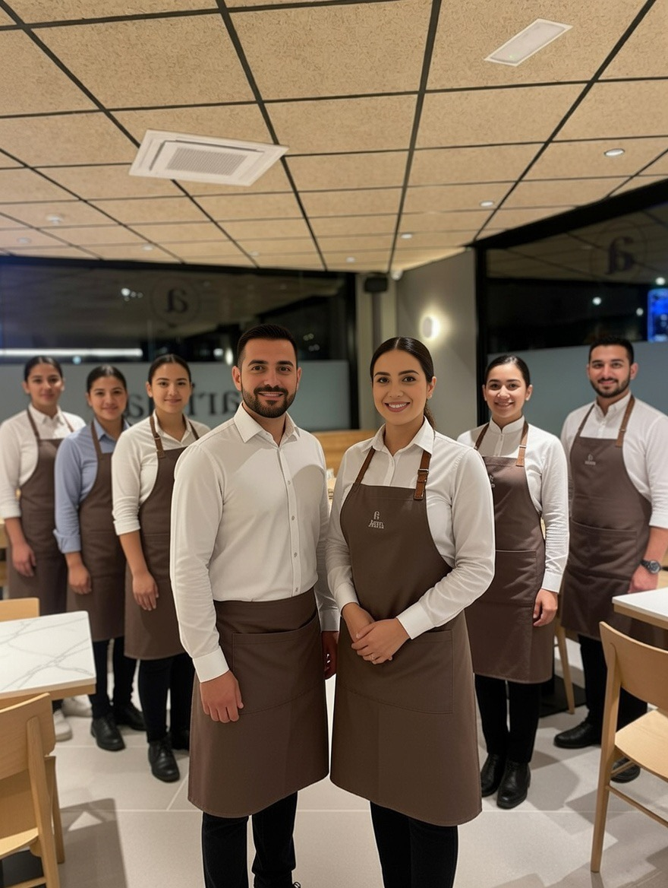

Bienvenido a nuestra taberna. Desde nuestra apertura, nos hemos
dedicado a ofrecer las mejores tostadas y snacks con ingredientes
de proximidad y un ambiente acogedor.
Nuestra pasión por la gastronomía se refleja en cada plato que
servimos, combinando tradición y modernidad en un solo lugar.
Nuestro servicio
Situado en el barrio Zabaleta Berri, Arima es un Gastrobar abierto a un bello y amplio parque, un lugar ideal para venir a relajarse y disfrutar de nuestra carta.

Para el desayuno
Desayunos saludables
Disponemos de gran variedad de desayunos, para que empieces el día con energía. Elige el que más te guste y el que más te convenga.

Para disfrutar de nuestro menú
Undécimo, almuerzo o cena
Después de tu paseo diario, de tu vuelta al monte o simplemente para recuperar fuerzas, aquí tendrás la ocasión de almorzar o cenar.

Allí o en casa
Pedidos y reservas
Tanto como si quieres gozar de nuestra carta con nosotros como si quieres llevar tu pedido a casa, llámanos y te atenderemos con gusto. Para realizar una reserva o para realizar tu pedido, nuestro teléfono estará siempre activo: 604 88 04 24

Equipo
Nuestro mayor valor
Creemos que el secreto para que todo funcione en armonía no está solo en la técnica, sino en el talento humano y la dedicación de quienes nos acompañan día a día. Es su pasión y su compromiso lo que nos permite ofrecerte siempre lo mejor y hacerte sentir como en casa.
Nuestro grupo y misión
Nuestra misión es satisfacer plenamente las expectativas de nuestro clientes y conseguir que disfruten de nuestra oferta, brindándoles un excelente servicio y productos de calidad. Participar en la vida cotidiana de las personas y contribuir a la activación de la vida social del barrio.
A tu disposición,
Arima Taldea